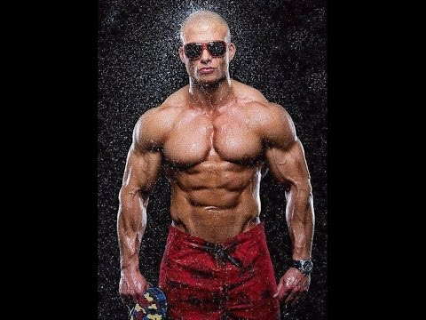
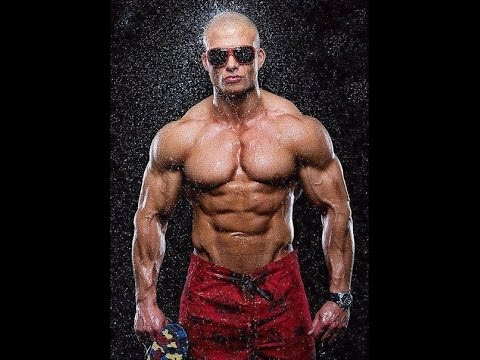

Фитнес & Кардио (аеробика) | Белчо Христов - Фитнес | Диета | Добавки
2020.09.15 13:58

info@belchohristov.com 0.00 лв. Клубен магазин
Основни категории Yamamoto Nutrition:
Аминокиселини Витамини и минерали Дрехи и аксесоари Здраве и уелнес Органик храни Маса и тегло Отслабване Протеини ПРОМОЦИИ Спорт и тренировкиTOП търсено от Yamamoto Nutrition
Дрехи, шапки и облекло Аминокиселини Витамини и минерали Въглехидратни Омега мазнини (EFA`s) Протеини на прах Предтренировъчни СледтренировъчниТОП Уелнес категории от Yamamoto Nutrition
Адаптогени Антиоксиданти Диабет и кръвна захар Детокс формули Диуретици Отслабване Стави и сухожилия Черен дроб ХолестеролТОП продукти на Yamamoto Nutrition
Антицелулит Л-карнитин Зелени храни Веган аминокиселини Лимфен дренаж Сьомгов протеин Растителен протеин Изотоници ЕнзимиИнформация за всеки клиент BelchoHristov.Com
Моят акаунт – регистрация Количка за поръчки Проследяване на поръчка Търговски условия Лични данни и защита Доставки и обслужване F.A.Q Клубно членство Клубна академия Клубни тренировки Клубен бизнес КонтактиРаботно Време
понеделник 10:00 - 14:00 15:00 - 19:00 вторник 10:00 - 14:00 15:00 - 19:00 сряда Неработен ден четвъртък 10:00 - 14:00 15:00 - 19:00 петък 10:00 - 14:00 15:00 - 19:00 събота Неработен ден неделя Неработен ден Search Количка Menuвъзможност за
разсрочено плащане в удобно
за теб време учебни
материали индивидуално обучение
онлайн и офлaйн МЯСТОТО, КЪДЕТО
ЩЕ ТЕ ЧАКАМ ЗАПАЗЕН
ИНДИВИДУАЛЕН ЧАС ОНЛАЙН И ОФЛАЙН ВСЯКА СРЯДА
ФИТНЕС ПРОГРАМИ
Скролирай из архив от материали
Фитнес тренировка за дупе | За жени на средна възраст
Средно-напреднали ниво Всички програми тук са примерни. Ако желаете индивидуална такава, разгледайте "Клубно членство" и заявете желание за Ваша собствена програма. ЧетиФитнес тренировка с дъмбели за бицепс | Мъже и Жени
Начинаещи ниво Всички програми тук са примерни. Ако желаете индивидуална такава, разгледайте "Клубно членство" и заявете желание за Ваша собствена програма. ЧетиФитнес тренировка при изморен кръст и гръб | Мъже и Жени
Напреднали ниво, Начинаещи ниво, Средно-напреднали ниво Всички програми тук са примерни. Ако желаете индивидуална такава, разгледайте "Клубно членство" и заявете желание за Ваша собствена програма. ЧетиФитнес програма за убийствени гърди | Мъже
Напреднали ниво, Средно-напреднали ниво Всички програми тук са примерни. Ако желаете индивидуална такава, разгледайте "Клубно членство" и заявете желание за Ваша собствена програма. ЧетиФитнес програма за оформяне на рамената | Мъже и Жени
Начинаещи ниво Всички програми тук са примерни. Ако желаете индивидуална такава, разгледайте "Клубно членство" и заявете желание за Ваша собствена програма. ЧетиФитнес програма (раздвижваща) за рамена | Жени
Начинаещи ниво Всички програми тук са примерни. Ако желаете индивидуална такава, разгледайте "Клубно членство" и заявете желание за Ваша собствена програма. ЧетиФитнес програма за гърди за маса и плътност | Мъже
Напреднали ниво, Средно-напреднали ниво Всички програми тук са примерни. Ако желаете индивидуална такава, разгледайте "Клубно членство" и заявете желание за Ваша собствена програма. ЧетиФитнес тренировки за гърди при поставен силикон | Жени
Напреднали ниво, Начинаещи ниво, Средно-напреднали ниво Всички програми тук са примерни. Ако желаете индивидуална такава, разгледайте "Клубно членство" и заявете желание за Ваша собствена програма. ЧетиФитнес тренировка за маса в гърдите | Мъже
Начинаещи ниво, Средно-напреднали ниво Всички програми тук са примерни. Ако желаете индивидуална такава, разгледайте "Клубно членство" и заявете желание за Ваша собствена програма. ЧетиФитнес тренировка за повдигане на гърди | Жени
Напреднали ниво, Начинаещи ниво, Средно-напреднали ниво Всички програми тук са примерни. Ако желаете индивидуална такава, разгледайте "Клубно членство" и заявете желание за Ваша собствена програма. ЧетиФитнес тренировка за секси гръб | Жени
Напреднали ниво, Начинаещи ниво, Средно-напреднали ниво Всички програми тук са примерни. Ако желаете индивидуална такава, разгледайте "Клубно членство" и заявете желание за Ваша собствена програма. ЧетиМускулна маса в гърба | Мъже
Начинаещи ниво Всички програми тук са примерни. Ако желаете индивидуална такава, разгледайте "Клубно членство" и заявете желание за Ваша собствена програма. ЧетиФитнес тренировка подобряване на гърба | Жени
Напреднали ниво, Начинаещи ниво, Средно-напреднали ниво Всички програми тук са примерни. Ако желаете индивидуална такава, разгледайте "Клубно членство" и заявете желание за Ваша собствена програма. ЧетиФитнес тренировки при лоша спермограма (при доказани биотични причини) | Мъже
Напреднали ниво Всички програми тук са примерни. Ако желаете индивидуална такава, разгледайте "Клубно членство" и заявете желание за Ваша собствена програма. ЧетиФитнес тренировки след мастектомия и поставяне на гръдни импланти подмускулно | Жени
Начинаещи ниво Всички програми тук са примерни. Ако желаете индивидуална такава, разгледайте "Клубно членство" и заявете желание за Ваша собствена програма. ЧетиФитнес тренировки при “увисване” на трицепсите | Мъже и Жени
Начинаещи ниво Всички програми тук са примерни. Ако желаете индивидуална такава, разгледайте "Клубно членство" и заявете желание за Ваша собствена програма. ЧетиФитнес тренировки при схващания и шипове във врата | Мъже и Жени
Начинаещи ниво Всички програми тук са примерни. Ако желаете индивидуална такава, разгледайте "Клубно членство" и заявете желание за Ваша собствена програма. ЧетиФитнес тренировка за бедра и дупе | Жени
Начинаещи ниво Всички програми тук са примерни. Ако желаете индивидуална такава, разгледайте "Клубно членство" и заявете желание за Ваша собствена програма. ЧетиФитнес тренировка за стегнати ръце | Мъже
Начинаещи ниво Всички програми тук са примерни. Ако желаете индивидуална такава, разгледайте "Клубно членство" и заявете желание за Ваша собствена програма. ЧетиФитнес тренировка за стегнати ръце | Жени
Начинаещи ниво Всички програми тук са примерни. Ако желаете индивидуална такава, разгледайте "Клубно членство" и заявете желание за Ваша собствена програма. ЧетиТренировка за коремна преса
Средно-напреднали ниво ЧетиТренировка за трапец
Начинаещи ниво Всички програми тук са примерни. Ако желаете индивидуална такава, разгледайте "Клубно членство" и заявете желание за Ваша собствена програма. ЧетиТренировка за коремна преса
Начинаещи ниво ЧетиФитнес тренировка за оформяне на гърди | Жени
Напреднали ниво, Начинаещи ниво Всички програми тук са примерни. Ако желаете индивидуална такава, разгледайте "Клубно членство" и заявете желание за Ваша собствена програма. ЧетиПрограми кардио
ТОП 7 грешки при тичане/бягане
Кардио Всички бегачи са правили грешки в даден момент по време на своята тренировка. В някои случаи повтаряме едни и същи грешки отново и отново. Но да се надяваме, че се учим от тези грешки и предприемаме стъпки, за да не ги повтаряме същите тези в бъдеще. Ето някои от най-често срещаните грешки при бягане (на пътека, на открито и т.н.) и как можете да избегнете нараняванията при бягане, както и други проблеми. ЧетиКардио тренировка за мускулна маса | Бягаща пътека, гребен тренажор и колело
Кардио, Маса и тегло Ето как можете да интегрирате тези три кардио уреда и кардио тренировка за изграждане на мускулна маса във бедрата. Тествано, доказано и работещо - повече хипетрофия и обем. 15" - 20" 700-900 ЧетиВариации на кардио тренировки | На открит терен, с дъмбел и раница
Кардио Здравейте и добре дошли в онлайн училище BelchoHristov.Com! Спазвайте внимателно моите съвети тук, за да знаете как да тренирате, как да се храните и как да възстановявате, за да сте здрави и красиви. 30 min 450 ЧетиМонотонна кардио тренировка за отслабване | Спорт, хранене и суплементиране
Кардио, Отслабване Здравейте и добре дошли в онлайн училище BelchoHristov.Com! Спазвайте внимателно моите съвети тук, за да знаете как да тренирате, как да се храните и как да възстановявате, за да сте здрави и красиви. 40 min 467 kcal ЧетиИнтервална кардио тренировка за ускоряване на метаболизма | Спорт, хранене и суплементиране
Кардио Здравейте и добре дошли в онлайн училище BelchoHristov.Com! Спазвайте внимателно моите съвети тук, за да знаете как да тренирате, как да се храните и как да възстановявате, за да сте здрави и красиви. 25-30 min 630 kcal ЧетиМонотонна кардио тренировка за тонус и здраве | Спорт, хранене и суплементиране
Здраве, Кардио, Тонус Здравейте и добре дошли в онлайн училище BelchoHristov.Com! Спазвайте внимателно моите съвети тук, за да знаете как да тренирате, как да се храните и как да възстановявате, за да сте здрави и красиви. 25-30 min 450 kcal ЧетиПрограми фитнес
Не лягайте по гръб, след тренировка и след хранене! Вижте защо?
Фитнес тренировки, Хранене и диети Вие стре тренирали, изморени сте, гладни сте - изяли сте следтренировъчното хранене. И бързате да си легнете ... нали? И тук ще сгрешите. Вижте защо? ЧетиМогат ли да са опасни за здравето фитнес суперсериите?
Фитнес тренировки Суперсериите са страхотен подход и похват. Но могат и да бъдат опасни за вас и вашето здраве, ако се приложат неправилно като похват и като момент във вашата фитнес тренировка. ЧетиПолезни похвати за правилни тренировки и диета през студените месеци в годината
Фитнес тренировки, Хранене и диети Зимата все още е дълга и за много от нас този период представлява брутална и безразсъдна обемна фаза. Калориите и броят на свободните хранения се увеличават и в крайна сметка скъпият ни екип за фитнес е готов да ни покрие от питащите погледи на онези, които ни се възхищават през лятото! В крайна сметка сезонът за по бански все още е далеч, греша ли? ЧетиКак да се разтягате правилно? Кой стречинг е правилен и къде се греши?
Фитнес тренировки Подобно на шофирането, разтягането (стречинг), има свой набор от правила за движение по пътя. Следвайте ги внимателно и ще стигнете до местоназначението си безопасно, здраво и в добра форма. Пренебрегнете ли ги и ще сте сами. Ето най-важните ТОП съвета и какво да избягвате, когато става въпрос за стречинг. ЧетиУнилатерална фитнес тренировка и упражнения за скулптуриране на тялото
Фитнес тренировки Уморени от изоставащи мускулни групи и липса на резултати? Казвате, че фитнес залата е вашият втори дом? А какво правите във него, след като не сте щастлив? Унилатералните фитнес тренировки и програма може да е точно това нещо, от което се нуждаете, за да изградите нова сила, баланса и симетрията на тялото на едно ново и следващото ниво! ЧетиБитката за 100 повторения. Нужните повторения за растеж.
Фитнес тренировки Изпълнявали ли сте тренировка във фитнес зала, в която всяко фитнес упоражнение е изпълнено със цели 100 повторения за работна тежест? Звучи ли предизвикателно? Да? Вижте какви ползи ще усвоите, ако тренирате по този начин. 60" 900 ЧетиКак да горите мазнини, докато изграждате мускули?
Фитнес тренировки, Хранене и диети Може да не сте в състояние да губите мазнини и да трупате мускули едновременно, но "свалянето" на калории не трябва да причини загуба на целия мускул, който сте изградили по време на фазата на изграждане, нали? ЧетиТънкости за по-добро усещане на Хип-Тръст упражнението за дупе
Фитнес тренировки Здравейте и добре дошли в онлайн училище BelchoHristov.Com! Спазвайте внимателно моите съвети тук, за да знаете как да тренирате, как да се храните и как да възстановявате, за да сте здрави и красиви. ЧетиПолзите от “Мъртва тяга” за мъже и жени. Анализи и разбиване на митове.
Фитнес тренировки Здравейте и добре дошли в онлайн училище BelchoHristov.Com! Спазвайте внимателно моите съвети тук, за да знаете как да тренирате, как да се храните и как да възстановявате, за да сте здрави и красиви. ЧетиКажете “Стоп!” на болезнеността в ставите и мускулите
Фитнес тренировки Здравейте и добре дошли в онлайн училище BelchoHristov.Com! Спазвайте внимателно моите съвети тук, за да знаете как да тренирате, как да се храните и как да възстановявате, за да сте здрави и красиви. Чети5 причини жените да тренират горна част на тялото
Фитнес тренировки Здравейте и добре дошли в онлайн училище BelchoHristov.Com! Спазвайте внимателно моите съвети тук, за да знаете как да тренирате, как да се храните и как да възстановявате, за да сте здрави и красиви. ЧетиЕлементи на фитнеса
Фитнес похвати и методики Хеви Дюти (описание, действие и ползи) Фитнес похвати и методики Джо Уидър (описание, действие и ползи) Фитнес похвати и методики Дроп серия (описание, действие и ползи) Фитнес похвати и методики Предварителната умора (описание, действие и ползи) Фитнес похвати и методики Форсирани повторения (описание, действие и ползи) Фитнес похвати и методики Частични повторения (описание, действие и ползи) Фитнес похвати и методики Метод “Пауза-Почивка” (описание, действие и ползи) Фитнес похвати и методики Суперсерии (описание, действие и ползи) Фитнес похвати и методики Работещи 10 похвата за подобряване на вашите резултати Фитнес похвати и методики Работен модел на интензивност Фитнес похвати и методики Стречинг описание, действие и ползи (приложение) Фитнес похвати и методики Кръгова фитнес тренировка описание, действие и ползи (приложение)Изчислете разхода калории
Искаш ли да получиш резултатите си на е-мейл?
Просто въведи мейла си ...
Изпрати Ако не получите този е-мейл до 2 мин, моля проверете спам кутията си!Типове мускулни влакна
ВИДОВЕ ОПИСАНИЕ И ПОЛЗИ Бързи влакна: (бели влакна)Белите мускулни влакна се наричат още Fast-Twich влакна. Te са морфологично по-дебели влакна, с висока скорост на контракция и затова лесно се изморяват.
Бързо изчерпва техния наличен гликоген. Белите мускулни влакна допринасят за сила и бързина.
Натоварват се с брой повторения в диапазона 1-2-3-4-5-6-7 повторения – повече 50 % бързи влакна. Удачни за спортове като футбол, лека атлетика, щанги. Бавни влакна: (червени влакна)
Червените мускулни влакна се наричат още Slow-Twich влакна. Te са морфологично по-тънки влакна, с ниска скорост на контракция и затова по-трудно се изморяват.
Бавно за изчерпва техния наличен гликоген. Червените мускулни влакна допринасят за издържливостта.
Натоварват се с брой повторения в диапазона 11-12 + повторения – повече бавни влакна. Удачни за спортове като джогинг, бягане, колоездене, плуване, маратон. Междинни влакна: (розови влакна)
Розовите мускулни влакна се наричат още Slow/Fast-Twich влакна. Te са морфологичен междинен клас влакна, с средна скорост на контракция и затова по-постепенно се изморяват.
Плавно за изчерпва техния наличен гликоген. Розовите мускулни влакна допринасят за функциалността.
Натоварват се с брой повторения в диапазона 8-9-10 повторения – съотношение бързи/бавни влакна 50/50. Удачни за фитнес, бодибилдинг и от части кросфит.
Изчислете максимална сила
Искаш ли да получиш резултатите си на е-мейл?
Просто въведи мейла си ...
Изпрати Ако не получите този е-мейл до 2 мин, моля проверете спам кутията си!Фитнес упражнения
Издърпване на щанга до брадичката | Хеликоптер
Рамена ДетайлиРаменни преси с щанга пред гърди
Рамена ДетайлиРаменни преси с щанга зад врат
Рамена ДетайлиРаменни разтваряния встрани от тялото от полунаклон
Рамена ДетайлиРаменни разтваряния встрани от тялото
Рамена ДетайлиИзнасяне на дъмбели преди тяло
Рамена ДетайлиРаменни преси с дъмбели
Рамена ДетайлиТрицепсово разгъване на скрипец през горна макара
Трицепс ДетайлиТрицепсово разгъване на скрипец
Трицепс ДетайлиЕдностранно трицепсово разгъване
Трицепс ДетайлиКик-Бек с дъмбели за трицепс
Трицепс ДетайлиТрицепсово разгъване с дъмбели
Трицепс ДетайлиТрицепсова екстензия с две ръце зад и над глава
Трицепс ДетайлиТрицепсова екстензия с една ръка зад и над глава
Трицепс ДетайлиИзбутване на щанга с тесен хват за трицепс
Трицепс ДетайлиРазгъване за трицепс от лег с щанга
Трицепс ДетайлиКонцентрично сгъване за бицепс
Бицепси ДетайлиБицепсово сгъване с дъмбели от седеж
Бицепси ДетайлиБицепсово сгъване на Скотова пейка
Бицепси ДетайлиБицепсово сгъване с щанга от стоеж
Бицепси ДетайлиБицепсово сгъване на машина през долна макара
Бицепси ДетайлиПулоувър на скрипец за гръб
Гръб ДетайлиГрабане на скрипец през долна макара
Гръб ДетайлиЛатерално придърпване на дъмбел
Гръб ДетайлиПридърпване на скрипец пред гърди
Гръб ДетайлиПридърпване на скрипец зад врат
Гръб ДетайлиПридърпване на "Т"-щанга
Гръб ДетайлиМъртва тяга с щанга
Гръб ДетайлиЧукчета с щанга
Гръб ДетайлиХиперекстензия
Гръб ДетайлиИзправяне на пръсти за прасец
Прасец ДетайлиСуму клек (Балетен клек) с дъмбел
Задно бедро, Квадрицепси Детайли"П"-образно спуснаке на дъмбел пред тялото
Задно бедро ДетайлиСиси клек с въже
Квадрицепси ДетайлиБедрено разгъване на машина
Квадрицепси ДетайлиБедрено сгъване на машина
Задно бедро ДетайлиЛег преса
Квадрицепси ДетайлиРимска мъртва тяга с дъмбели
Задно бедро ДетайлиНапади с дъмбели
Квадрицепси ДетайлиНапади с щанга
Квадрицепси ДетайлиРимска мъртва тяга с изправени бедра
Квадрицепси ДетайлиКлек с щанга зад врат
Квадрицепси ДетайлиРитници за дупе от колянна опора
Квадрицепси ДетайлиЛатерални махове от лег
Квадрицепси ДетайлиКейбъл крос (кросоувър) от наклон
Гърди ДетайлиКейбъл крос (кросоувър) от стоеж
Гърди ДетайлиКофички на успоредка за гърди
Гърди ДетайлиФлайс от обратен наклон с дъмбели
Гърди ДетайлиФлайс с дъмбели от полулег
Гърди ДетайлиФлайс с дъмбели от лег
Гърди ДетайлиИзбутване на дъмбели от обратен лег
Гърди ДетайлиИзбутване на дъмбели от полулег
Гърди ДетайлиИзбутване на дъмбели от лег
Гърди ДетайлиИзбутване на щанга от полулег
Гърди ДетайлиИзбутване на щанга от лег
Гърди ДетайлиПовдигане на дъмбели за трапец
Трапец ДетайлиПовдигане на щанга за трапец
Трапец ДетайлиПовдигане на бедрата за коремна преса
Коремна преса ДетайлиКоремна преса крънч
Коремна преса ДетайлиОбратна коремна преса
Коремна преса ДетайлиПовдигане на бедрата от вис за корем
Коремна преса ДетайлиБягаща пътека
Квадрицепси ДетайлиВелоергометър
Квадрицепси ДетайлиКростренажор
Квадрицепси ДетайлиФитнес упражнения и програми по мускулни групи
Коремна преса
Всички програми
Трапец
Всички програми
Прасци
Всички програми
Гърди
Всички програми
Гръб
Всички програми
Рамена
Всички програми
Бицепси
Всички програми
Трицепси
Всички програми
Квадрицепси и задно бедро
Всички програми
Кардио и други материали
Аеробиката и кардио заниманията са приложими на няколко наистина работещи машини и уреди, които вече почти всяка една модерна зала притежава и предлага. Аеробиката и кардио заниманията протичат правилно, когато е и правилна техниката на изпълнение на следните кардио уреди:
тренировки на степер тренировки на бягаща пътека тренировки на велоергометър (колело) тренировки на кростренажорВидовете кардио тренировки (аеробика), като цяло биват два основновни типа:
монотонни (Low Intensity Cardio Training) кардио тренировки интервални (High Intensity Interval Training) кардио тренировкиТук са описани ползите, от съчетанието на кардио тренировка със силова част (анаеробна тренировка):
ползи от съчетанието можду силова (фитнес) тренировка с кардиоФитнес за “Нея” Фитнес програма за красив и строен бюст Фитнес за “Нея” Фитнес програма за секси дупе Фитнес за “Нея Фитнес съвети и правила за секси прасец Фитнес за “Нея” Как да тренира фитнес всяка дама? Фитнес за “Нея” Кои са златните 8 фитнес упражнения за дамите? Фитнес за “Него” Кои са златните 25 закона за чиста мускулна маса Фитнес за “Него” Кои са златните 30 закона за отслабване
Фитнес Формула за изгоряне на калории (енергоразход в kkal) Фитнес Пулс Фитнес Интензивност Фитнес Травми. Вътрешни и външни травми Фитнес Травми по време на тренировки. Причини и решения. Фитнес Мускулна треска Фитнес Мускулни (Двигателни) единици. Фитнес Ексцентрична и концентрична фаза на фитнес упражненията. Фитнес Мускулно възстановяване. Активно и пасивно възстановяване. Фитнес Мускулен растеж. Хипертрофия и хиперплазия. Фитнес Кортизол и намаляване на неговите нива Фитнес Загряващи серии. Подготвителна и работна серия. Фитнес Значение на пълната фитнес амплитуда на фитнес упражненията. Фитнес Най-често допускани грешки във фитнес залата Фитнес Най-чести причини за липса на фитнес резултати Фитнес Хранене и фитнес при слаби (изоставащи) мускулни групи
За магазина
Акаунт | Вход и Регистрация Вашата количка Проследяване на пратка Търговски условия и GDPR Политика на поверителност Доставки и логистикаПолезни връзки
Анатомия | Физиология Добавки | Билки | Продукти Фитнес | Кардио | Упражнения Хранене | Диети | Калории Проблемни състояния | Уелнес Рубрики | Казуси с клиентиЗа компанията
За мен За моята мисия За моите обучения За моите партньори За моят магазин За моето “Клубно членство”Контакти
гр. Варна, бул. Чаталджа # 20- Магазинът на Белчо Христов 052 72 05 72
Карта физически магазин Белчо Христов - Фитнес | Диета | Добавки © 2020 - Абсолютно всички права в този сайт са запазени!
Навигация Close Menu
Клубен магазинОсновни категории Yamamoto Nutrition:
Аминокиселини Витамини и минерали Дрехи и аксесоари Здраве и уелнес Органик храни Маса и тегло Отслабване Протеини ПРОМОЦИИ Спорт и тренировкиTOП търсено от Yamamoto Nutrition
Дрехи, шапки и облекло Аминокиселини Витамини и минерали Въглехидратни Омега мазнини (EFA`s) Протеини на прах Предтренировъчни СледтренировъчниТОП Уелнес категории от Yamamoto Nutrition
Адаптогени Антиоксиданти Диабет и кръвна захар Детокс формули Диуретици Отслабване Стави и сухожилия Черен дроб ХолестеролТОП продукти на Yamamoto Nutrition
Антицелулит Л-карнитин Зелени храни Веган аминокиселини Лимфен дренаж Сьомгов протеин Растителен протеин Изотоници ЕнзимиИнформация за всеки клиент BelchoHristov.Com
Моят акаунт – регистрация Количка за поръчки Проследяване на поръчка Търговски условия Лични данни и защита Доставки и обслужване F.A.Q Клубно членство Клубна академия Клубни тренировки Клубен бизнес КонтактиРаботно Време
- Фитнес храна | GymBeam.bg
- Фитнес & Кардио (аеробика) | Белчо Христов - Фитнес ...
- ЦЕНИ – Спортен клуб НЕО Фит
- Фитнес - За Жената
- Онлайн магазин Top Sport - всичко за фитнеса, фитнес уреди ...
- Хранителни добавки, Секс Стимуланти, Фитнес храни, Парфюми ...
- Genezis | Спортно облекло, Фитнес дрехи, Тениски, Потници ...
- FITNES-BG.COM - Фитнес
- Фитнес център "NordGym"
- Спортен клуб НЕО Фит – Спортен клуб
- Фитнес храна | GymBeam.bg
Магазин за вашето здраве, хранителни добавки за маса, отслабване, стимуланти, фитнес храни, хомеопатия, парфюми, натурлна козметика. Online доставка в страната
- Фитнес & Кардио (аеробика) | Белчо Христов - Фитнес ...
Фитнес зала Съвременни уреди, натоварващи всички мускулни групи. 2 Солариум За Вашия перфектен тен.
- ЦЕНИ – Спортен клуб НЕО Фит
Тренирай кратко вкъщи, хапвай вкусно и се радвай на живота с Руми Илиева, сертифициран фитнес инструктор.
- Фитнес - За Жената
Фитнес гривна Mi Band 4 от Xiaomi е с цветен 120 х 240 пиксела AMOLED дисплей, като производителя запази същия дизайн на Mi Band 3. Каишката на гривната може да се сваля, за да се смени с друг цвят по ваш избор.
- Онлайн магазин Top Sport - всичко за фитнеса, фитнес уреди ...
УВАЖАЕМИ КЛИЕНТИ, От 18.05.2020 нашият фитнес център ще бъде отворен отново при прилагане указанията на Министерството на маладежта и спорта. С конкретните мерки може да се запознаете...
- Хранителни добавки, Секс Стимуланти, Фитнес храни, Парфюми ...
фитнес БГ-Информация за фитнес, бодибилдинг, културизъм. Диети за отслабване и повишаване на мускулната маса. Хранителни добавки, медикаменти. Описание на фитнес упражнения и форум.
- Genezis | Спортно облекло, Фитнес дрехи, Тениски, Потници ...
ВСЕКИ КЛИЕНТ, КОЙТО ПОСЕЩАВА КЛУБА Е ЗАДЪЛЖЕН ДА НОСИ СЪС СЕБЕ СИ ЧИСТИ ОБУВКИ И КЪРПА!
- FITNES-BG.COM - Фитнес
Фитнес център Fitness Line е с площ от 800 м2, от които на 550 м2 са разположени 52 бр. силови уреди и 12 бр. кардио уреди. Производител на оборудването са двата най-утвърдени на световния пазар производителя – Precor и Technogym.
- Фитнес център "NordGym"
Pole Dance – фитнес на пилон Живеем в 21 век – времена на свобода във всяко отношение. Имаме избор да тренираме каквото и където си поискаме, без да бъдем ограничавани.
- Спортен клуб НЕО Фит – Спортен клуб
Карта фитнес 3месеца без ограничение 110лв. Солариум 6мин.(минимално) 4,80лв. Карта фитнес 6месеца без ограничение: 180лв. Фитнес + индивидуална тренровка с инструктор: 15 лв.
Магазин за вашето здраве, хранителни добавки за маса, отслабване, стимуланти, фитнес храни, хомеопатия, парфюми, натурлна козметика. Online доставка в страната
Фитнес зала Съвременни уреди, натоварващи всички мускулни групи. 2 Солариум За Вашия перфектен тен.
Тренирай кратко вкъщи, хапвай вкусно и се радвай на живота с Руми Илиева, сертифициран фитнес инструктор.
Фитнес гривна Mi Band 4 от Xiaomi е с цветен 120 х 240 пиксела AMOLED дисплей, като производителя запази същия дизайн на Mi Band 3. Каишката на гривната може да се сваля, за да се смени с друг цвят по ваш избор.
УВАЖАЕМИ КЛИЕНТИ, От 18.05.2020 нашият фитнес център ще бъде отворен отново при прилагане указанията на Министерството на маладежта и спорта. С конкретните мерки може да се запознаете...
фитнес БГ-Информация за фитнес, бодибилдинг, културизъм. Диети за отслабване и повишаване на мускулната маса. Хранителни добавки, медикаменти. Описание на фитнес упражнения и форум.
ВСЕКИ КЛИЕНТ, КОЙТО ПОСЕЩАВА КЛУБА Е ЗАДЪЛЖЕН ДА НОСИ СЪС СЕБЕ СИ ЧИСТИ ОБУВКИ И КЪРПА!
Фитнес център Fitness Line е с площ от 800 м2, от които на 550 м2 са разположени 52 бр. силови уреди и 12 бр. кардио уреди. Производител на оборудването са двата най-утвърдени на световния пазар производителя – Precor и Technogym.
Pole Dance – фитнес на пилон Живеем в 21 век – времена на свобода във всяко отношение. Имаме избор да тренираме каквото и където си поискаме, без да бъдем ограничавани.
Карта фитнес 3месеца без ограничение 110лв. Солариум 6мин.(минимално) 4,80лв. Карта фитнес 6месеца без ограничение: 180лв. Фитнес + индивидуална тренровка с инструктор: 15 лв.

 
